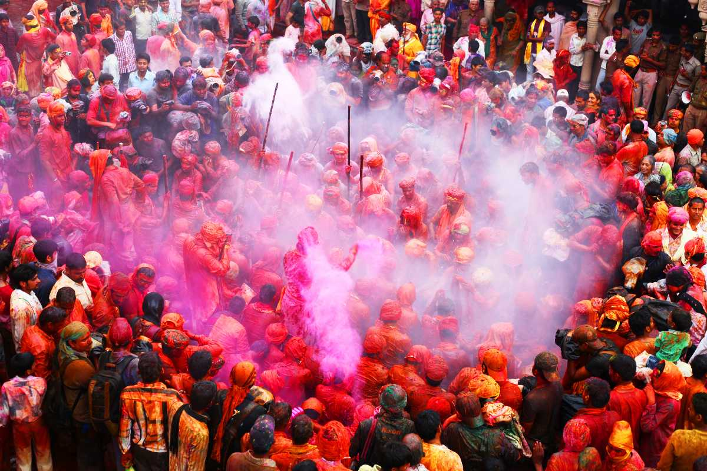
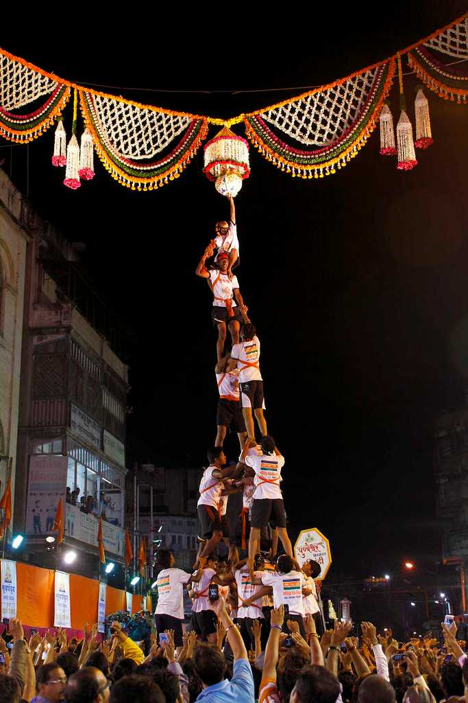
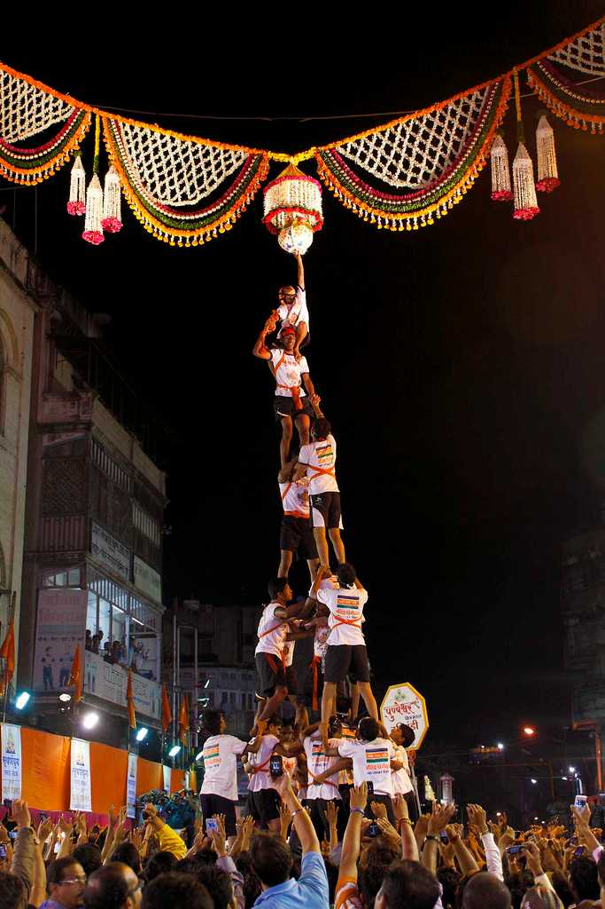

Diwali is a festival of lights and one of the major festivals celebrated by Hindus, Jains, Sikhs and some Buddhists, notably Newar Buddhists. The festival usually lasts five days and is celebrated during the Hindu lunisolar month Kartika (between mid-October and mid-November). One of the most popular festivals of Hinduism, Diwali symbolizes the spiritual "victory of light over darkness, good over evil, and knowledge over ignorance". The festival is widely associated with Lakshmi, goddess of prosperity, with many other regional traditions connecting the holiday to Sita and Rama, Vishnu, Krishna, Yama, Yami, Durga, Kali, Hanuman, Ganesha, Kubera, Dhanvantari, or Vishvakarman. Furthermore, it is, in some regions, a celebration of the day Lord Rama returned to his kingdom Ayodhya with his wife Sita and his brother Lakshmana after defeating Ravana in Lanka and serving 14 years of exile. Ganesh Chaturthi, also known as Vinayaka Chaturti, is a Hindu festival celebrating the arrival of Ganesh to earth from Kailash Parvat with his mother Goddess Parvati/Gauri. The festival is marked with the installation of Ganesh clay idols privately in homes and publicly by Shri Bal Gangadhar Tilak popularly known as Lokmanya Tilak in Pune in the year 1893 on elaborate pandals (temporary stages). Observations include chanting of Vedic hymns and Hindu texts such as, prayers and vrata (fasting). Offerings and prasāda from the daily prayers, that are distributed from the pandal to the community, include sweets such as modaka as it is believed to be a favourite of Lord Ganesh.
 

Holi is a popular ancient Indian festival, also known as the "Festival of Love", the "Festival of Colours" and the "Festival of Spring". The festival celebrates the eternal and divine love of Radha Krishna. Raksha Bandhan is a popular, traditionally Hindu, annual rite, or ceremony, which is central to a festival of the same name, celebrated in South Asia, and among people around the world influenced by Hindu culture. On this day, sisters of all ages tie a talisman, or amulet, called the rakhi, around the wrists of their brothers, symbolically protecting them, receiving a gift in return, and traditionally investing the brothers with a share of the responsibility of their potential care. Krishna Janmashtami, also known simply as Janmashtami or Gokulashtami, is an annual Hindu festival that celebrates the birth of Krishna, the eighth avatar of Vishnu. It is observed according to the Hindu lunisolar calendar, on the eighth day (Ashtami) of the Krishna Paksha (dark fortnight) in Shraavana or Bhadrapad (depending on whether the calendar chooses the new moon or full moon day as the last day of the month), which overlaps with August or September of the Gregorian calendar.